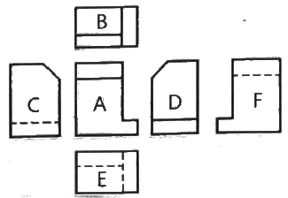
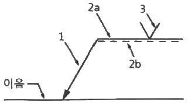
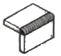
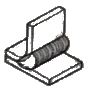
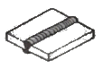
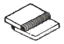
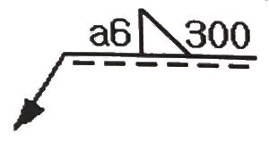
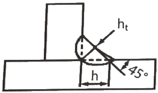

용접산업기사 (2019-03-03 기출문제)
1과목: 용접야금 및 용접설비제도
1. 금속의 일반적인 특성으로 틀린 것은?
- 전성 및 연성이 좋다.
- 전기 및 열의 양도체이다.
- 금속 고유의 광택을 가진다.
- 액체 상태에서 결정 구조를 가진다.
(정답률: 90%)

2. 용접작업에서 예열을 하는 목적으로 가장 거리가 먼 것은?
- 열영향부와 용착금속의 경도를 증가시키기 위해
- 수소의 방출을 용이하게 하여 저온균열을 방지하기 위해
- 용접부의 기계적 성질을 향상시키고 경화 조직의 석출을 방지하기 위해
- 온도 분포가 완만하게 되어 열응력의 감소로 용접변형을 줄이기 위해
(정답률: 71%)
3. Fe-C계 평형 상태도에서 체심입방격자인 α철이 A3점에서 γ철인 면심입방격자로, A4점에서 다시 δ철인 체심입방격자로 구조가 바뀌는 것을 무엇이라고 하는가?
- 편석
- 자기 변태
- 동소 변태
- 금속간화합물
(정답률: 70%)
4. 한국산업표준에서 정한 일반 구조용 탄소 강관을 표시하는 것은?
- SS275
- SM275A
- SGT275
- STWW290
(정답률: 40%)
5. 다음 원소 중 적열취성의 원인이 되는 것은?
- C
- H
- P
- S
(정답률: 81%)
6. 연강류 제품을 용접한 후 노내 풀림법을 이용하여 용접 후 처리를 하려고 한다. 이때 제품을 노 내에서 출입시키는 온도로 가장 적당한 것은?
- 300℃ 이하
- 400℃ 이하
- 500℃ 이하
- 600℃ 이하
(정답률: 75%)
7. 황동에서 일어나는 화학적 성질이 아닌 것은?
- 자연균열
- 시효경화
- 탈아연 부식
- 고온 탈아연
(정답률: 54%)
8. 일반적으로 강재의 탄소당량이 몇 % 이하일 때 용접성이 양호한 것으로 판단하는가?
- 0.4
- 0.6
- 0.8
- 1.0
(정답률: 66%)
9. 다음 중 경도가 가장 낮은 조직은?
- 펄라이트
- 페라이트
- 시멘타이트
- 마텐자이트
(정답률: 63%)
10. 용접한 오스테나이트계 스테인리스강의 입간 부식을 방지하기 위해 사용하는 탄화물 안정화 원소에 속하지 않는 것은?
- Ti
- Nb
- Ta
- Al
(정답률: 59%)
11. 다음 재료 기호 중 기계 구조용 탄소 강재를 나타낸 것은?
- SM38C
- SF340A
- SMA460
- SM375A
(정답률: 69%)
12. 도면에서 척도를 표시할 때 NS의 의미는?
- 배척을 나타낸다.
- 현척이 아님을 나타낸다.
- 비례척이 아님을 나타낸다.
- 척도가 생략됨을 나타낸다.
(정답률: 72%)
13. 다음 그림과 같은 제3각법 투상도에서 A가 정면도일 때 배면도는?

- C
- D
- E
- F
(정답률: 76%)
14. 다음 용접 기호 중 ‘2a'가 의미하는 것은?

- 홈 형상
- 루트 간격
- 기준선(실선)
- 식별선(점선)
(정답률: 75%)
15. 용접 기호에 참고 표시로 끝(꼬리) 부분에 표시하는 내용이 아닌 것은?
- 용접 방법
- 허용 수준
- 작업 자세
- 재료 인장강도
(정답률: 57%)
16. 다음 그림 중 모서리 이음을 나타낸 것은?




(정답률: 91%)
17. 부품의 면이 평면으로 가공되어 있고, 복잡한 윤곽을 갖는 부품인 경우에 그 면에 광명단 등을 발라 스케치 용지에 찍어 그 면의 실형을 얻는 스케치 방법은?
- 본뜨기법
- 프린트법
- 사진촬영법
- 프리핸드법
(정답률: 74%)
18. 다음 중 가는 이점 쇄선의 용도로 가장 적합한 것은?
- 치수선
- 수준면선
- 회전 단면선
- 무게 중심선
(정답률: 56%)
19. 핸들이나 바퀴 등의 암 및 리브, 훅, 축, 구조물의 부재 등의 절단면을 표시하는데 가장 적합한 단면도는?
- 부분 단면도
- 한쪽 단면도
- 회전도시 단면도
- 조합에 의한 단면도
(정답률: 78%)
20. 다음 용접 도시기호의 설명으로 옳은 것은?

- 필릿 용접부의 목 길이는 6mm이다.
- 필릿 용접부의 목 두께는 6mm이다.
- 맞대기 용접부의 길이는 300mm이다.
- 필릿 용접을 화살표 반대쪽에서 실시한다.
(정답률: 68%)
2과목: 용접구조설계
21. 연강의 맞대기 용접 이음에서 용착금속의 인장강도가 100kgf/mm2이고 안전률이 5일 때 용접 이음의 허용응력은 몇 kgf/mm2인가?
- 10
- 20
- 40
- 80
(정답률: 86%)
22. 다음 용접시공 조건 중 수축과 관련된 내용으로 틀린 것은?
- 루트 간격이 클수록 수축이 작다.
- 피닝을 하면 수축이 감소한다.
- 구속도가 크면 수축이 작아진다.
- V형 이음은 X형 이음보다 수축이 크다.
(정답률: 62%)
23. 용접 구조물 조립 시 일반적인 고려사항이 아닌 것은?
- 변형제거가 쉽게 되도록 하여야 한다.
- 구조물의 형상을 유지할 수 있어야 한다.
- 경제적이고 고품질을 얻을 수 있는 조건을 설정한다.
- 용접 변형 및 잔류 응력을 증가시킬 수 있어야 한다.
(정답률: 84%)
24. 용접부의 후열 처리로 나타나는 효과가 아닌 것은?
- 조직을 경화시킨다.
- 잔류응력을 제거한다.
- 확산성 수소를 방출한다.
- 급냉에 따른 균열을 방지한다.
(정답률: 56%)
25. 표점거리가 50mm인 인장 시험편을 인장 시험한 결과 62mm로 늘어났다면 연신율(%)은 얼마인가?
- 12
- 18
- 24
- 30
(정답률: 62%)
26. 120 A의 용접 전류로 피복 아크 용접을 하고자 한다. 적정한 차광 유리의 차광도 번호는?
- 4번
- 6번
- 8번
- 10번
(정답률: 71%)
27. 다음 그림의 필릿 용접부에서 이론 목두께 ht는?

- 0.303h
- 0.5⑤h
- 0.707h
- 1.414h
(정답률: 69%)
28. 용접 이음을 설계할 때 정하중을 받는 강(steel)의 안전율로 가장 적합한 것은?
- 3
- 6
- 9
- 12
(정답률: 49%)
29. 다음 중 침투 탐상 검사의 특징으로 틀린 것은?
- 침투제가 오염되기 쉽다.
- 국부적 시험이 불가능하다.
- 미세한 균열도 탐상이 가능하다.
- 시험표면이 너무 거칠거나 기공이 많으면 허위 지시 모양을 만든다.
(정답률: 59%)
30. 잔류 응력을 경감시키는 방법이 아닌 것은?
- 피닝법
- 담금질 열처리법
- 저온 응력 완화법
- 기계적 응력 완화법
(정답률: 62%)
31. 용접구조물 설계 시 주의 사항에 대한 설명으로 틀린 것은?
- 용접이음의 집중, 교차를 피한다.
- 용접치수는 강도상 필요 이상 크게 하지 않는다.
- 후판을 용접할 경우 용입이 낮은 용접법을 이용하여 층수를 늘린다.
- 판면에 직각방향으로 인장하중이 작용할 경우 판의 압연방향에 주의한다.
(정답률: 81%)
32. 용접 잔류응력 등 인장응력이 걸리거나, 특정의 부식 환경으로 될 때 발생하는 용접 이음의 부식은?
- 입계부식
- 틈새부식
- 응력부식
- 접촉부식
(정답률: 75%)
33. 일반적인 용접구조물의 조립순서를 결정할 때 고려해야 할 사항으로 틀린 것은?
- 변형 발생 시 변형제거가 용이해야 한다.
- 수축이 큰 이음보다 적은 이음을 먼저 용접한다.
- 구조물의 형상을 고정하고 지지할 수 있어야 한다.
- 변형 및 잔류응력을 경감할 수 있는 방법을 채택한다.
(정답률: 82%)
34. 다음 용접 결함 중 치수상의 결함이 아닌 것은?
- 변형
- 치수 불량
- 형상 불량
- 슬래그 섞임
(정답률: 78%)
35. 용융된 금속이 모재와 잘못 녹아 어울리지 못하고 모재에 덮인 상태의 결함은?
- 스패터
- 언더컷
- 오버랩
- 기공
(정답률: 78%)
36. 용접이음부의 흠 형상을 선택할 때 고려해야 할 사항이 아닌 것은?
- 용착 금속의 양이 많을 것
- 경제적인 시공이 가능할 것
- 완전한 용접부가 얻어질 수 있을 것
- 홈 가공이 쉽고 용접하기가 편할 것
(정답률: 85%)
37. 용접준비 사항 중 용접 변형 방지를 위해 사용하는 것은?
- 앤빌(anvil)
- 스트롱백(strong back)
- 터닝 롤러(turing roller)
- 용접 머니퓰레이터(welding manipulator)
(정답률: 65%)
38. 용접구조물 시공 시 비틀림 변형을 경감하기 위한 방법으로 틀린 것은?
- 용접 지그를 활용한다.
- 집중 용접을 피하여 작업한다.
- 이음부의 맞춤을 정확하게 한다.
- 용접 순서는 구속이 없는 자유단에서부터 구속이 큰 부분으로 진행한다.
(정답률: 81%)
39. 허용응력을 계산하는 식으로 옳은 것은?
- 허용응력=하중/단면적
- 허용응력=단면적/하중
- 허용응력=변형량/단면적
- 허용응력=단면적/변형량
(정답률: 62%)
40. 다음 중 위보기 자세를 의미하는 기호는?
- F
- H
- V
- O
(정답률: 86%)
3과목: 용접일반 및 안전관리
41. 피복 아크 용접 작업 중 스패터가 발생하는 원인으로 가장 거리가 먼 것은?
- 운봉이 불량할 때
- 전류가 너무 높을 때
- 아크 길이가 너무 짧을 때
- 건조되지 않은 용접봉을 사용했을 때
(정답률: 73%)
42. 46.7리터의 산소용기에 150kgf/cm2이 되게 산소를 충전하였고, 이것을 대기 중에서 환산하면 산소는 약 몇 리터 인가?
- 4090
- 5030
- 6100
- 70⑤
(정답률: 65%)
43. 피복 아크 용접 중 용접보에서 모재로 용융금속이 이행하는 방식이 아닌 것은?
- 단락형
- 용단형
- 스프레이형
- 글로뷸러형
(정답률: 58%)
44. TIG용접 시 안전사항에 대한 설명으로 틀린 것은?
- 용접기 덮개를 벗기는 경우 반드시 전원 스위치를 켜고 작업한다.
- 제어장치 및 토치 등 전기계통의 절연 상태를 항상 점검해야 한다.
- 전원과 제어장치의 접지 단자는 반드시 지면과 접지되도록 한다.
- 케이블 연결부와 단자의 연결 상태가 느슨해졌는지 확인하여 조치한다.
(정답률: 85%)
45. 연납땜에 가장 많이 사용하는 용가재는?
- 구리납
- 망간납
- 주석납
- 황동납
(정답률: 52%)
46. 가스용접에서 수소가스 충전용기의 도색 표시로 옳은 것은?
- 회색
- 백색
- 청색
- 주황색
(정답률: 70%)
47. 산소-아세틸렌 용접에서 후진법과 비교한 전진법의 특징으로 틀린 것은?
- 용접변형이 크다.
- 용접속도가 느리다.
- 열 이용률이 나쁘다.
- 산화의 정도가 약하다.
(정답률: 51%)
48. 아크용접기의 보수 및 점검 시 유의해야할 사항으로 틀린 것은?
- 회전부와 가동부분에 윤활유가 없도록 한다.
- 용접기는 습기나 먼지 많은 곳에 설치하지 않도록 한다.
- 2차측 단자의 한쪽과 용접기 케이스는 접지를 확실히 해 둔다.
- 탭 전환의 전기적 접속부는 샌드 페이퍼(sand paper)등으로 잘 닦아 준다.
(정답률: 69%)
49. 일반적인 가스압점의 특징으로 틀린 것은?
- 전력이 불필요하다.
- 용가재 및 용제가 불필요하다.
- 이음부의 탈탄층이 전혀 없다.
- 장치가 복잡하고 설비비가 비싸다.
(정답률: 65%)
50. 다음 중 땜납의 구비조건으로 틀린 것은?
- 접합강도가 우수해야 한다.
- 모재보다 용융점이 높아야 한다.
- 표면장력이 적어 모재의 표면에 잘 퍼져야 한다.
- 유동성이 좋고 금속과의 친화력이 있어야 한다.
(정답률: 76%)
51. 가스 절단 시 예열불꽃의 세기가 강할 때 나타나는 현상으로 틀린 것은?
- 절단면이 거칠어진다.
- 역화를 일으키기 쉽다.
- 모서리가 용융되어 둥글게 된다.
- 슬래그 중 철 성분의 박리가 어려워진다.
(정답률: 49%)
52. 탄산가스 아크 용접에 대한 설명으로 틀린 것은?
- 가시 아크이므로 시공이 편리하다.
- 바람의 영향으로 받지 않으므로 방풍장치가 필요 없다.
- 전류 밀도가 높아 용입이 깊고, 용접 속도를 빠르게 할 수 있다.
- 단락 이행에 의하여 박판도 용접이 가능하며, 전자세 용접이 가능하다.
(정답률: 83%)
53. 논 가스 아크 용접의 특징으로 옳은 것은?
- 보호가스나 용제를 필요로 한다.
- 용접장치가 복잡하고 운반이 불편하다.
- 보호가스의 발생이 적어 용접선이 잘 보인다.
- 용접 길이가 긴 용접물에 아크를 중단하지 않고 연속 용접을 할 수 있다.
(정답률: 57%)
54. 초음파 용접으로 금속을 용접하고자 할 때 모재의 두께로 가장 적당한 것은?
- 0.01~2mm
- 3~5mm
- 6~9mm
- 10~15mm
(정답률: 60%)
55. AW 300의 교류 아크 용접기로 조정할 수 있는 2차 전류(A) 값의 범위는?
- 30~220A
- 40~330A
- 60~330A
- 120~480A
(정답률: 62%)
56. 가스절단에 사용하는 연료용 가스 중 발열량(kcal/m3)이 가장 낮은 것은?
- 수소
- 메탄
- 프로판
- 아세틸렌
(정답률: 52%)
57. 다음 용접기호 중 수평 자세를 의미하는 것은?
- F
- H
- V
- O
(정답률: 81%)
58. 카바이드(CaC2)의 취급 시 주의사항으로 틀린 것은?
- 카바이드는 인화성물질과 같이 보관한다.
- 카바이드 통을 개봉할 때 절단가위를 사용한다.
- 카바이드 운반 시 타격, 충격, 마찰을 주지 말아야 한다.
- 카바이드 개봉 후 뚜껑을 잘 닫아 습기가 침투되지 않도록 보관한다.
(정답률: 84%)
59. 토치를 사용하여 용접 부분의 뒷면을 따내거나 U형, H형의 용접흠으로 가공하기 위한 방법으로 가장 적당한 것은?
- 스카핑
- 분말 절단
- 가스 가우징
- 산소창 절단
(정답률: 64%)
60. 접합할 모재를 고정시킨 후, 비소모식 틀을 이음부에 삽입시킨 후 회전하여 마찰열을 발생시켜 접합하는 것으로, 알루미늄 및 마그네슘 합금의 접합에 주로 활용되는 용접은?
- 오토콘 용접
- 레이저빔 용접
- 마찰 교반 용접
- 고주파 업셋용접
(정답률: 69%)